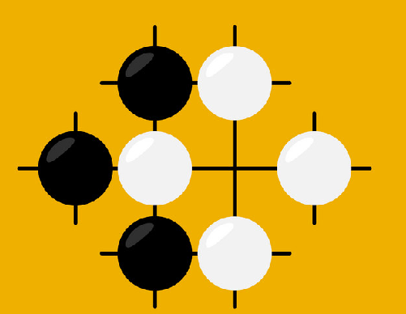
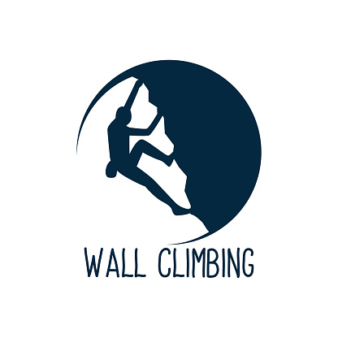

JE SUIS...
Etudiant en intelligence artificielle à l'école Microsoft by Simplon, anciennement étudiant en Physique à Lyon
1. Possédant un passé dans le domaine de la Physique
et des bases dans la programmation en C++ , j'ai décidé de me reconvertir dans la DATA , il me semblait
logique de choisir ce domaine particulier
dans le monde de l'informatique. Je possède de l'expérience dans les traitements et la vulgarisation de
données à travers de multiples travaux de groupes
pratiqués dans ma licence.
MES LOISIRS

GO : ART MARTIAL DE L'ESPRIT
Pourquoi l'intelligence artificiel ? Alphago.
J'ai découvert le jeu de go à un stand d'une convention sur le Japon à Lyon en 2014. Cette idée de jouer à ce jeu inconnu aux règles simples est resté incrusté
en moi jusqu'en 2017 ,où j'ai finalement décidé d'y jouer.J'avais commencé à jouer en autodidacte depuis 3 mois quand le documentaire de DEEPMIND sur Alphago est sorti , je n'avais que les bases et malgré tout je suis resté fasciné
par ce jeu si mystique et la prouesse technologique de l'équipe de GOOGLE.
Je suis un joueur amateur 9 Kyu , j'ai commencé sérieusement le go quand j'ai emmenagé à Lille en octobre 2021. Je suis membre du club de Go de Lille et d'un club de go en ligne : SITS, là ou je dispute
3 parties sérieuse par mois dans une ligue appelé TheShell comptabilisé à l'échelle FFG.
Je pourrais parler des heures de la philosophie du GO , de la perception de l'espace quand on joue à ce jeu , où encore cette sensation d'harmonie quand on comprend un nouveau
précèpte mais je vais m'arrêtez ici , si vous voulez connaître ma manière de penser , celle d'un débutant venez lire mon journal en ligne : DDK
N'hésitez pas à m'envoyer une invitation sur OGS un serveur en ligne gratuit , si vous avez envie de poser des pierres : monprofilogs

ESCALADE : ASCENSION PSYCHOLOGIQUE
On pense souvent que le physique est primordial pour escalader un mur , c'est une vérité mais l'aspect le plus important quand on grimpe est psychologique.
Combien de fois me suis-je retrouvé devant un mur ou la dernière prise d'une voie en me disant qu'il m'était impossible de l'atteindre ? Beaucoup trop, un aspect
important est la connaissance de ces capacités physiques , c'est en pratiquant comme au go que l'on aiguise ses sens , ses limites , ses possibilités.
J'ai découvert l'escalade , plus particulièrement le bloc en première année à la fac , par la suite j'ai commencé à en faire régulièrement.
Ce sport permet d'apprendre à gérer son sang froid , d'analyser une situation particulière et de trouver une solution par nos capacité personnelles.
Au jeu de go : il y'a des puzzles appelé "Tsumego" qui veut dire "Vie ou Mort" , ceux sont des puzzles où il faut jouer une séquence de coups particulièrs pour résoudre une situation
: Tuer un groupe ou faire vivre un groupe. Je perçois chaques voies au bloc comme des Tsumego , comparé au go il ny'a pas une seule solution mais pour un physique "spécifique"
il y'a une solution particulière de résoudre une voie en utilisant la souplesse , la technique ou la force.